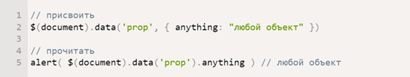

<!DOCTYPE html>
<html>
  <head>
    <meta charset="utf-8">
    <title>Blog</title>
    <meta content="" name="author">
    <meta content="" name="description">
    <meta content="" name="keywords">
    <meta content="width=device-width, initial-scale=1" name="viewport">
    <meta content="ie=edge" http-equiv="x-ua-compatible">
    <link rel="stylesheet" href="assets/css/foundation.css">
    <link rel="stylesheet" href="assets/css/layout.css">
    <link rel="stylesheet" href="assets/css/app.css">
    <script src="assets/js/foundation.js" defer></script>
    <script src="assets/js/app.js" defer></script>
    <script src="assets/js/webgl.js" defer></script><!--[if lt IE 9]>
    <script src="http://cdnjs.cloudflare.com/ajax/libs/html5shiv/3.7.2/html5shiv.min.js"></script><![endif]-->
  </head>
  <body>
    <div class="preloader">
      <svg class="preloader-svg" version="1.1" id="Layer_1" xmlns="http://www.w3.org/2000/svg" xmlns:xlink="http://www.w3.org/1999/xlink" x="0px" y="0px" width="80px" height="95.113px" viewBox="0 0 80 95.113" enable-background="new 0 0 80 95.113" xml:space="preserve">
        <path class="preloader__wave1" id="wave1" fill="none" stroke="#fff" stroke-width="3.9003" stroke-miterlimit="10" d="M0,38.005c6.663,0,6.663,7.801,13.327,7.801c6.665,0,6.665-7.801,13.33-7.801c6.667,0,6.667,7.801,13.334,7.801c6.666,0,6.666-7.801,13.331-7.801c6.67,0,6.67,7.801,13.339,7.801S73.33,38.005,80,38.005"></path>
        <path class="preloader__wave2" id="wave2" fill="none" stroke="#fff" stroke-width="3.9003" stroke-miterlimit="10" d="M0,61.684c6.663,0,6.663,7.801,13.327,7.801c6.665,0,6.665-7.801,13.33-7.801c6.667,0,6.667,7.801,13.334,7.801c6.666,0,6.666-7.801,13.331-7.801c6.67,0,6.67,7.801,13.339,7.801S73.33,61.684,80,61.684"></path>
        <path class="preloader__wave3" id="wave3" fill="none" stroke="#fff" stroke-width="3.9003" stroke-miterlimit="10" d="M0,85.362c6.663,0,6.663,7.801,13.327,7.801c6.665,0,6.665-7.801,13.33-7.801c6.667,0,6.667,7.801,13.334,7.801c6.666,0,6.666-7.801,13.331-7.801c6.67,0,6.67,7.801,13.339,7.801S73.33,85.362,80,85.362"></path>
        <text class="preloader__text" id="preloader_text" transform="matrix(1 0 0 1 19.9785 20.5957)" font-family="'ArialMT'" font-size="24">0%</text>
      </svg>
    </div>
    <header class="header">
      <div class="background-static"></div>
      <div class="header-wrapper">
        <div class="dark-block"></div>
        <div class="logo-wrapper logo-wrapper-blog">
          <div class="logo logo-blog">
            <div class="logo-img"></div>
            <div class="main-title__block main-title__block-blog">
              <h1 class="main-title__text">БЛОГ</h1>
              <svg class="underline">
                <use xlink:href="assets/img/sprite.svg#line"></use>
              </svg>
              <h5 class="logo__subtext">Статьи, которые я написал</h5>
            </div>
          </div>
        </div>
        <div class="Background">
          <canvas class="Background-canvas"></canvas>
        </div>
        <svg class="header-traingle" xmlns="http://www.w3.org/2000/svg" viewbox="0 0 1200 100" preserveaspectratio="none">
          <polygon class="header-traingle__left header-traingle__left-blog" points="0,0   0,100   600,100"></polygon>
          <polygon class="header-traingle__right header-traingle__right-blog" points="600,100   1200,100   1200,0"></polygon>
        </svg>
      </div>
    </header>
    <div class="posts-wrap">
      <aside class="posts-menu">
        <ul class="posts-menuitems">
          <li class="posts-menu__item"><a class="posts-menu__link active" href="#">Самое важное в SASS</a></li>
          <li class="posts-menu__item"><a class="posts-menu__link" href="#">Приёмы в вёрстке, без которых не обходится ни один сайт</a></li>
          <li class="posts-menu__item"><a class="posts-menu__link" href="#">Самый необходимый набор Gulp плагинов</a></li>
          <li class="posts-menu__item"><a class="posts-menu__link" href="#">Почему я выбрал Jade</a></li>
        </ul>
      </aside>
      <div class="posts">
        <div class="post active">
          <h3 class="post__title">Самое важное в SASS</h3>
          <p class="post__date">18.09.2014</p>
          <div class="post__text">
            <p>
              Таким образом начало повседневной работы по формированию позиции позволяет выполнять важные задания
              по разработке направлений прогрессивного развития. Разнообразный и богатый опыт новая модель
              организационной деятельности играет важную роль в формировании новых предложений. Товарищи! новая модель
              организационной деятельности играет важную роль в формировании систем массового участия.
            </p>
            <p>
              Таким образом начало повседневной работы по формированию позиции позволяет выполнять важные задания
              по разработке направлений прогрессивного развития. Разнообразный и богатый опыт новая модель
              организационной деятельности играет важную роль в формировании новых предложений. Товарищи! новая модель
              организационной деятельности играет важную роль в формировании систем массового участия.
            </p>
          </div>
        </div>
        <div class="post">
          <h3 class="post__title">Приёмы в вёрстке, без которых не обходитсяни один сайт</h3>
          <p class="post__date">18.09.2014</p>
          <div class="post__text">
            <p>
              Таким образом начало повседневной работы по формированию позиции позволяет выполнять важные задания
              по разработке направлений прогрессивного развития. Разнообразный и богатый опыт новая модель
              организационной деятельности играет важную роль в формировании новых предложений. Товарищи! новая модель
              организационной деятельности играет важную роль в формировании систем массового участия.
            </p>
            <p>
              Таким образом начало повседневной работы по формированию позиции позволяет выполнять важные задания
              по разработке направлений прогрессивного развития. Разнообразный и богатый опыт новая модель
              организационной деятельности играет важную роль в формировании новых предложений. Товарищи! новая модель
              организационной деятельности играет важную роль в формировании систем массового участия.
            </p>
          </div>
        </div>
      </div>
    </div>
    <footer class="footer">
      <div class="footer-wrap">
        <div class="footer-top footer-top-blog">
          <div class="footer-aboutsite">
            <p class="footer-aboutsite__text">Этот сайт я сделал в рамках обучения  в Школе онлайн образования LoftSchool</p>
          </div>
          <div class="footer-links">
            <ul class="menu">
              <li class="menu__item"><a class="menu__link" href="works.html">Мои работы</a></li>
              <li class="menu__item"><a class="menu__link" href="about.html">Обо мне</a></li>
              <li class="menu__item"><a class="menu__link" href="blog.html">Блог</a></li>
              <li class="menu__item"><a class="menu__link" href="login.html">Авторизация</a></li>
            </ul>
            <div class="socials-icons socials-icons_footer">
              <ul class="socials-icons__list">
                <li class="socials-icons__item socials-icons__item_footer"><a class="socials-icon__link" href="#">
                    <svg class="socials-icon__img">
                      <use xlink:href="assets/img/sprite.svg#vk"></use>
                    </svg></a></li>
                <li class="socials-icons__item socials-icons__item_footer"><a class="socials-icon__link" href="#">
                    <svg class="socials-icon__img">
                      <use xlink:href="assets/img/sprite.svg#github"></use>
                    </svg></a></li>
                <li class="socials-icons__item socials-icons__item_footer"><a class="socials-icon__link" href="#">
                    <svg class="socials-icon__img">
                      <use xlink:href="assets/img/sprite.svg#linkedin"></use>
                    </svg></a></li>
              </ul>
            </div>
          </div>
          <div class="footer-quote">
            <p class="footer-quote__text">
              Всегда пишите код так, будто сопровождать его будет склонный к
              насилию психопат, который знает, где вы живете.
            </p>
            <p class="footer-quote__text">— Martin Golding</p>
          </div>
        </div>
        <div class="footer-bottom footer-bottom-blog">
          <p class="copyright">© Богдан Завоёваный | Создано с любовью в LoftSchool | 2016</p>
        </div>
      </div>
    </footer>
  </body>
</html>